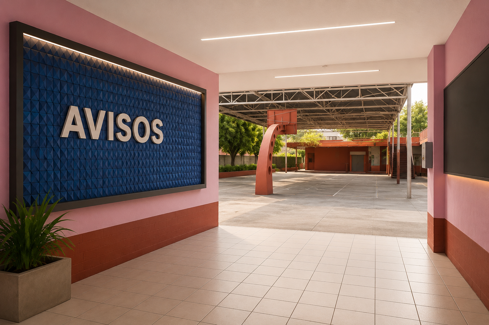

📢 Acuerdo número 09/09/2026 uso de celulares
En la siguiente liga podrán consultar dicho acuerdo.
🏆 Concurso de Ajedrez
12 de julio de 2026
Se invita a todos los alumnos...

En la siguiente liga podrán consultar dicho acuerdo.
12 de julio de 2026
Se invita a todos los alumnos...